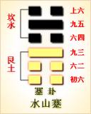

<!DOCTYPE html PUBLIC "-//W3C//DTD XHTML 1.0 Transitional//EN" "http://www.w3.org/TR/xhtml1/DTD/xhtml1-transitional.dtd">

<html xmlns="http://www.w3.org/1999/xhtml">
<head>
<meta content="text/html; charset=utf-8" http-equiv="Content-Type"/>
<title>周易第三十九卦：蹇卦 水山�?坎上艮下原文解释翻译-周易-国学�?/title>
<meta content="周易,蹇卦,水山�?坎上艮下" name="keywords"/>
<meta content="周易,蹇卦,水山�?坎上艮下，周易第三十九卦：蹇�?水山�?坎上艮下解释翻译�?（水山蹇）坎上艮�?《蹇》：利西南，不利东北。利见大人。贞吉�?初六，往蹇来誉�?六二，王臣蹇蹇，匪躬之故�?九三，往蹇来反�?六四，往蹇来连�?九五，大蹇朋来�?上六，往" name="description"/>
<link href="css.css" media="screen" rel="stylesheet" type="text/css"/>
</head>
<body>
<div class="gxlayout">
</div>
<div class="gxlayout">
<div class="ihead">
<div class="title"><a>周易</a></div>
<ul class="more fl">
<li>当前位置:<a>国学梦首�?/a> &gt; <a>国学经典</a> &gt; <a>经部</a> &gt; <a>四书五经</a> &gt; <a>周易</a> &gt;  周易第三十九卦：蹇卦 水山�?坎上艮下原文解释翻译</li>
</ul>
</div>
<div class="gxbl fl">
<div class="latitle">

<h1>周易第三十九卦：蹇卦 水山�?坎上艮下</h1>
<div class="lainfo"><span>作者：佚名</span> <span>全集�?a>周易</a></span> <span>来源：网�?/span> <span>[<a rel="nofollow" target="_blank">挑错/完善</a>]</span></div>
</div>
<div class="lacontent">
<div class="clearfix"></div>
<!--<!-- allowfullscreen="" frameborder="0" height="36" src="http://www.ximalaya.com/swf/sound/yellow.swf?id=1382602&amp;auto=true" width="260"></iframe>-->
<p style="text-align:center"><strong></strong></p>
<p style="text-align:center"><a>周易第三十九卦详�?/a></p>
<p style="text-align:center"><a>第三十九卦初六爻详解</a>　<a>第三十九卦六二爻详解</a>　<a>第三十九卦九三爻详解</a></p>
<p style="text-align:center"><a>第三十九卦六四爻详解</a>　<a>第三十九卦九五爻详解</a>　<a>第三十九卦上六爻详解</a></p>
<p><strong><a target="_blank">周易</a>第三十九�?�?水山�?坎上艮下</strong></p>
<p>蹇：利西南，不利东北;利见大人，贞吉�?/p>
<p>彖曰：蹇，难也，险在前也。见险而能止，知矣�?蹇利西南，往得中�?不利东北，其道穷也。利见大人，往有功也。当位贞吉，以正邦也。蹇之时用大矣哉!</p>
<p>象曰：山上有水，�?君子以反身修德�?/p>
<p>初六：往蹇，来誉。象曰：往蹇来誉，宜待也�?/p>
<p>六二：王臣蹇蹇，匪躬之故。象曰：王臣蹇蹇，终无尤也�?/p>
<p>九三：往蹇来反。象曰：往蹇来反，内喜之也�?/p>
<p>六四：往蹇来连。象曰：往蹇来连，当位实也�?/p>
<p>九五：大蹇朋来。象曰：大蹇朋来，以中节也�?/p>
<p>上六：往蹇来硕，�?利见大人。象曰：往蹇来硕，志在内也。利见大人，以从贵也�?/p>
<p><strong><a href="39_蹇卦.html" target="_blank">蹇卦</a>卦象，水山蹇卦的象征意义</strong></p>
<p>蹇卦，这个卦是异卦相叠，下卦为艮，上卦为坎。坎为水，艮为山。山高水深，困难重重，人生险阻，见险而止，明哲保身，可谓智慧�?/p>
<p>蹇，是指跋行艰难。蹇卦位�?a href="38_睽卦.html" target="_blank">睽卦</a>之后，《序卦》解释说：“乖必有难，故受之以蹇。蹇者，难也。”在睽卦的乖离之后，一定会出现艰难险阻，这正是蹇卦的用意�?/p>
<p>《象》中这样解释本卦：山上有水，�?君子以反身修德�?/p>
<p>《象》中指出：蹇卦的卦象�?�?下坎(�?上，为高山上积水之表象，象征艰难险阻，行动困难。面对这种情况，君子应该很好地反省自己，提高自己的品德修养，通过自身的努力渡过困境�?/p>
<p>蹇卦象征陷入困境，难以前进，属于下下卦。《象》中这样来断此卦：大雨倾地雪满天，路上行人苦又寒，拖泥带水费尽力，事不遂心且耐烦�?/p>
<p>【水山蹇卦释义�?/p>
<p>此卦卦名为蹇。《说文》中说：“蹇，跋也。”足跛则难于行走，所以蹇卦的意思是行走困难，不顺利。前面的睽卦表示家道衰落，俗话说“家贫百事哀”，家道衰落会带来百事不顺，所以睽卦的后面是蹇卦�?/p>
<p>蹇卦�?a target="_blank">�?/a>：蹇卦的卦画为两个阳爻四个阴爻，其特点是，蹇卦既是上一卦睽卦的旁通卦(即变�?，又是下一�?a href="40_解卦.html" target="_blank">解卦</a>的覆卦�?/p>
<p>蹇卦卦象：从卦象上分析，蹇卦的上卦为坎为水，下卦为艮为山，山上有水便是蹇卦的卦象。大山本已构成险阻，�?a target="_blank">山中</a>又有水流重重，所以山重水复，险象环生，使人举步维艰�?a href="52_艮卦.html" target="_blank">艮卦</a>又有停止的意思，所以此卦还有行人被前面险阻所困，进退两难的含义�?/p>
<p>关键词：周易,蹇卦,水山�?坎上艮下</p>
<div class="clearfix"></div>
<div class="title"><div class="thot">解释翻译</div><span>[挑错/完善]</span></div><p><a href="39_蹇卦.html" target="_blank">蹇卦</a>：往西南方走有利，往东北方走不利。有利于会见王公贵族。占得吉兆�?/p>
<p>初六：出门时艰难，回来时安适�?/p>
<p>六二：王臣的处境十分艰难，不是他自身的缘故�?/p>
<p>九三：出门时艰难，回来时快乐高兴。六四：出门时艰难，回来时有车可坐�?/p>
<p>九五：经历了许多艰难，最终赚钱获利�?/p>
<p>上六：出门时艰难回来时欢喜跳跃。吉利。有利于见到王公贵族�?/p>
<div class="title"><div class="thot">注释出处</div><span>[请记住我�?国学�?www.guoxuemeng.com]</span></div><p>①蹇(jian)是本卦的标题。蹇的意思是艰难。全卦的内容是通过商旅来说明由难变为不难的道理。作标题的“赛”字既与内容有关，又是卦中的多见词�?/p>
<p>②誉：用作“趋”，意思是安全舒适地行路�?/p>
<p>③蹇蹇：难上加难�?/p>
<p>④躬：自己�?/p>
<p>⑤反：意思是高兴快乐�?/p>
<p>(6)连：用作“辇”，意思是车�?/p>
<p>(7)朋：朋贝，货币�?/p>
<p>(8)硕：用作“蹁”，意思是跳跃，这里用来说明高兴�?/p>
<div class="clearfix"></div>
<div class="contextdhall clearfix">
<ul>
<li>上一篇：<a href="38_睽卦.html">周易第三十八卦：睽卦 火泽�?离上兑下</a> </li>
<li>下一篇：<a href="40_解卦.html">周易第四十卦：解�?雷水�?震上坎下</a> </li>
<li>全   文�?a>周易</a></li>
</ul>
</div>
</div>
<div class="clearfix mt20"></div>
</div>
</div>
<div class="clearfix mt20"></div>
<div class="gxlayout">
</div>
<script>
var _hmt = _hmt || [];
(function() {
  var hm = document.createElement("script");
  hm.src = "https://hm.baidu.com/hm.js?872034ded637616c5cf8e173a446bb0e";
  var s = document.getElementsByTagName("script")[0];
  s.parentNode.insertBefore(hm, s);
})();
</script>
</body>
</html>
